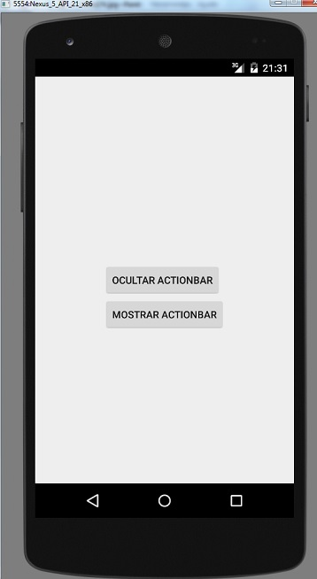

La barra de acción se muestra en la parte superior para acceder a las opciones de nuestro programa, pero hay situaciones donde necesitemos ocultarla para tener más espacio. Para ocultar y mostrar el ActionBar disponemos de dos métodos:
show() hide()
Problema:
Confeccionar una aplicación (Proyecto051) que mediante dos botones se permita ocultar el ActionBar o mostrarlo. Disponer tres opciones en el menú desplegable del ActionBar.
El código fuente de la aplicación es:
package ar.com.tutorialesya.proyecto051;
import android.support.v7.app.ActionBarActivity;
import android.os.Bundle;
import android.view.Menu;
import android.view.MenuItem;
import android.view.View;
import android.widget.Toast;
public class MainActivity extends ActionBarActivity {
@Override
protected void onCreate(Bundle savedInstanceState) {
super.onCreate(savedInstanceState);
setContentView(R.layout.activity_main);
}
@Override
public boolean onCreateOptionsMenu(Menu menu) {
// Inflate the menu; this adds items to the action bar if it is present.
getMenuInflater().inflate(R.menu.menu_main, menu);
return true;
}
@Override
public boolean onOptionsItemSelected(MenuItem item) {
// Handle action bar item clicks here. The action bar will
// automatically handle clicks on the Home/Up button, so long
// as you specify a parent activity in AndroidManifest.xml.
int id = item.getItemId();
if (id==R.id.opcion1) {
Toast.makeText(this,"Se seleccionó la primer opción",Toast.LENGTH_LONG).show();
}
if (id==R.id.opcion2) {
Toast.makeText(this,"Se seleccionó la segunda opción",Toast.LENGTH_LONG).show();
}
if (id==R.id.opcion3) {
Toast.makeText(this,"Se seleccionó la tercer opción", Toast.LENGTH_LONG).show();
}
return super.onOptionsItemSelected(item);
}
public void ocultar(View v) {
getSupportActionBar().hide();
}
public void mostrar(View v) {
getSupportActionBar().show();
}
}
Luego cuando lo ejecutamos podemos observar según el botón que presionamos el ActionBar se hace visible o se oculta:

O aparece oculta:
Para poder ocultar el ActionBar debemos obtener la referencia del objeto mediante el método getSupportActionBar() que se trata de un método heredado de la clase ActionBarActivity:
public void ocultar(View v) {
getSupportActionBar().hide();
}
Para volver a hacer visible el ActionBar llamamos al método show(), esto ocurre cuando presionamos el segundo botón:
public void mostrar(View v) {
getSupportActionBar().show();
}
Este proyecto lo puede descargar en un zip desde este enlace: proyecto051.zip